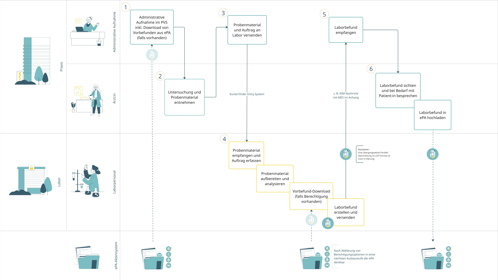
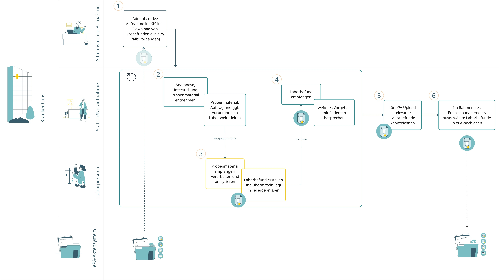
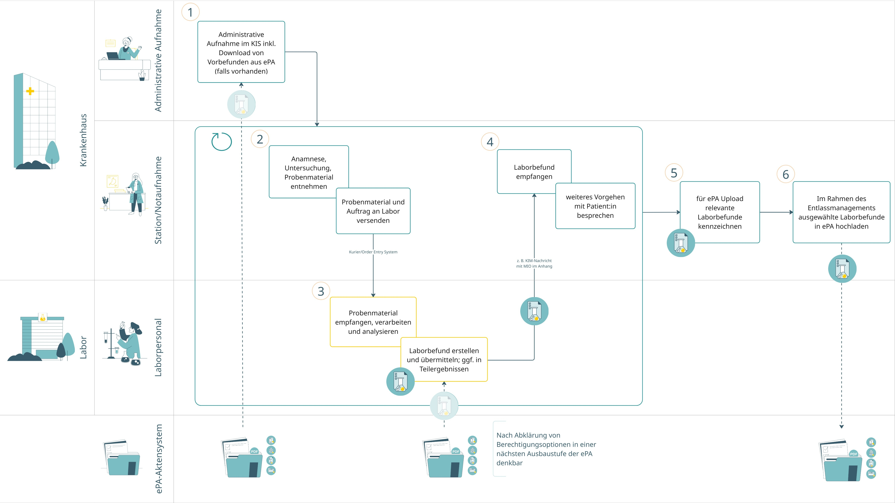
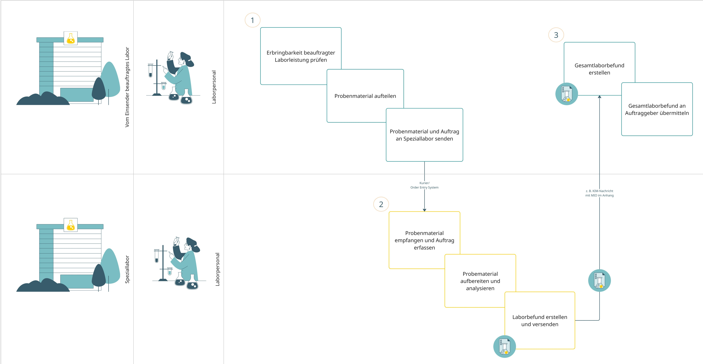
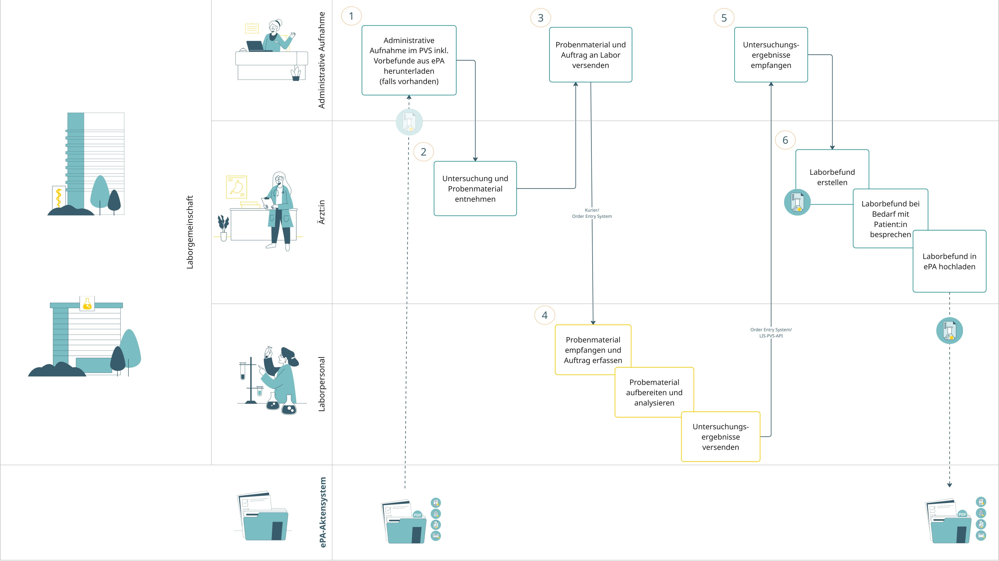
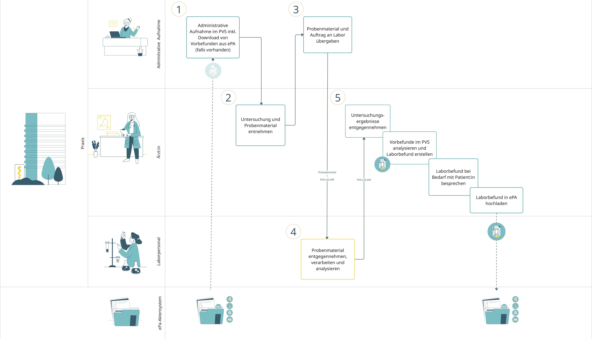
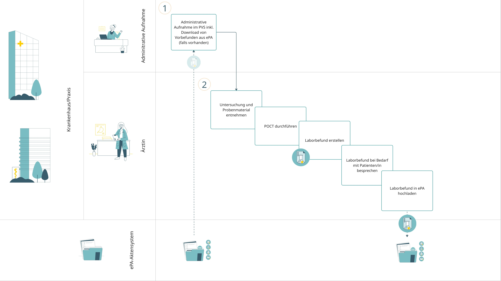
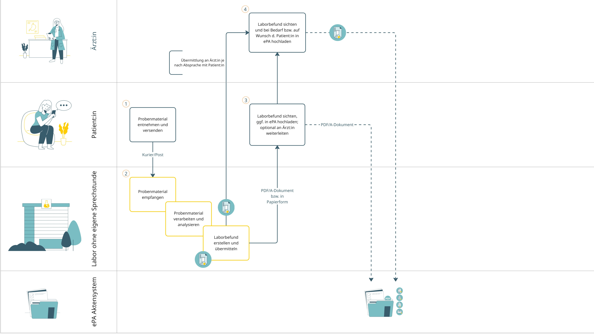
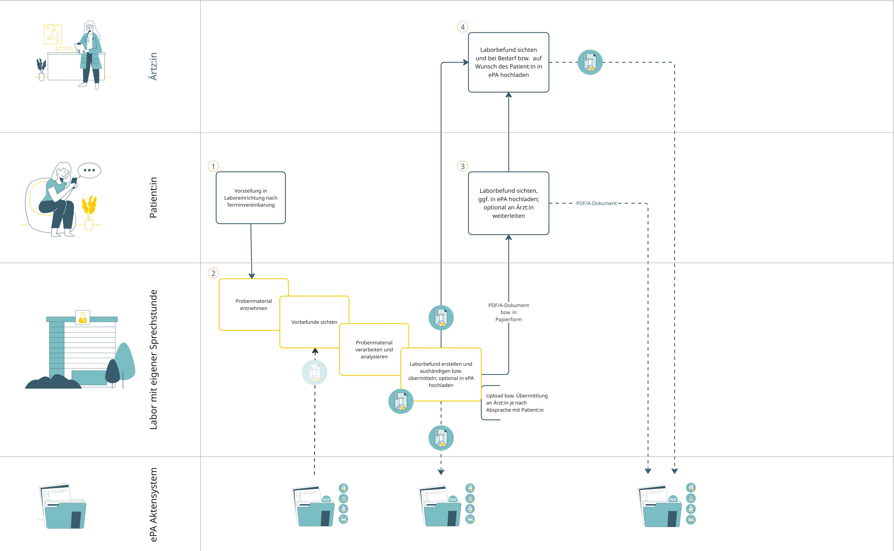

Damit medizinische Informationsobjekte (MIOs) ihr volles Potenzial im Versorgungsalltag entfalten können, ist ihre feste Einbindung in die Versorgungsprozesse unerlässlich. Diese Integration gelingt besonders dann, wenn MIOs bestehende Abläufe gezielt unterstützen – auch wenn dafür gegebenenfalls Prozesse modifiziert werden müssen. Eine optimale Einbettung fördert nicht nur das Verständnis für die Anwendung von MIOs, sondern erhöht auch ihre Akzeptanz bei Herstellern und Anwender:innen. Gleichzeitig erleichtert sie die systematische Integration und routinemäßige Nutzung innerhalb digitaler Systeme. Aus diesem Grund wurde die Darstellung von Versorgungsprozessen als zentrales Element im Digital-Gesetz (DigiG) verankert.
Wie Laborbefunde zukünftig standardisiert und effizient behandelnden Personen sowie Versicherten zur Verfügung gestellt werden können, zeigt diese Prozessanalyse.
🛈 Definition Laboruntersuchung
Laboruntersuchungen im Sinne dieses Prozessleitfadens sind alle medizinisch veranlassten bzw. von der versicherten Person beauftragten Untersuchungen von Körpermaterialien zur Identifizierung möglicher Erkrankungen. Diese Untersuchung erfolgt mittels optischer, chemischer oder immunologischer Analysen, welche meistens automatisiert erfolgen.
Ein Artefakt, dass dabei entsteht, ist der Laborbefund.
“Ein Laborbefund liegt nach Auffassung des Arbeitskreises „Einführungskonzept Laborbefund“ [ des Interop Councils, Anm. d. Verf. ] unter Bezugnahme auf die Richtlinie der Bundesärztekammer zur Qualitätssicherung laboratoriumsmedizinischer Untersuchungen nur dann vor, wenn zu den Messergebnissen auch eine ärztliche Bewertung vorliegt. Dabei ist ein Laborbefund immer als eine Einheit zu betrachten, die als Ganzes ärztlich bewertet wird. Diese Bewertung wird im MIO Laborbefund abgebildet. Bei Veränderungen entsteht ein komplett neuer Laborbefund (aus: Positionspapier des Arbeitskreises „Einführungskonzept Laborbefund“ (Version vom 27.09.2024), Interop Council, S. 7, abgerufen am 05.02.2025 (08:50 Uhr))
Im Folgenden werden die im Positionspapier des IOP AK verankerten unterschiedlichen Szenarien („Beauftragtes Labor“, „Laborgemeinschaft“, „Eigenleistung“) näher erläutert.
🛈 Disclaimer
Die nachfolgenden Beschreibungen zur Einbindung der elektronischen Patientenakte (ePA) in den Versorgungsprozess einer Laboruntersuchung sind als Zielbild zu verstehen. Bestimmte Funktionalitäten wie bspw. der Zugriff von Laboreinrichtungen auf die ePA sind nach jetzigem Stand noch nicht mit der Einführung der ersten Stufe des MIO Laborbefund möglich. Hierfür müssen noch regulatorische und technische Anpassungen vorgenommen werden, die von Seiten der Verantwortlichen zu einem späteren Zeitpunkt vorgesehen sind.
Im Rahmen einer Behandlung in einer vertragsärztlichen Praxis kann sich der Bedarf nach einer Laboruntersuchung stellen: Zunächst erfolgt die administrative Aufnahme des/r Patient:in durch ärztliches Assistenzpersonal inklusive Klärung des ePA-Zugriffs. Anschließend findet die ärztliche Anamnese statt, in dessen Ergebnis eine Laboruntersuchung indiziert ist. Die behandelnde Person legt dazu eine Anforderung an, in der alle zu untersuchenden Analyten aufgeführt werden und beauftragt anschließend eine von ihr gewählte geeignete Laboreinrichtung mit der Untersuchung. Je nach Anwendungsfall; ggf. in Abhängigkeit von der Probenart, wird die zu untersuchende Probe in der veranlassenden Praxis oder im Labor entnommen, was ggf. einer vorgeschalteten Terminvereinbarung bedarf.
In der Laboreinrichtung wird der Auftrag systemseitig erfasst, die Probe identifiziert und die Analytik gemäß Anforderung durchgeführt. Die Messergebnisse werden in das eingesetzte Laborinformationssystem (LIS) übernommen und anschließend technisch sowie medizinisch validiert. Die Probe wird, soweit aktuell keine Folgeanalyse notwendig ist, für ggf. spätere Nachforderungen und/oder Überprüfungen gelagert. Ansonsten erfolgt eine erneute Messung dieser Probe auf weitere, für eine fundierte Befunderstellung notwendige Analyten. Anschließend werden die Ergebnisse zur Befunderstellung freigegeben.
Für die Erstellung des Laborbefundes kann es notwendig sein, neben den aktuellen Ergebnissen auch frühere Laborbefunde zu vergleichbaren Untersuchungen beizuziehen, um bei der Interpretation der Ergebnisse ggf. individuelle Besonderheiten zu berücksichtigen. Nach erfolgter Interpretation und ggf. notwendiger besonderer Kennzeichnung als kritischer Befund, welcher eine besondere Aufmerksamkeit auch hinsichtlich der Kommunikation gegenüber der untersuchten Person erfordert, wird der Befund freigegeben und im LIS als technisches Format - zukünftig in Form des MIO Laborbefund - erzeugt. Anschließend wird der Laborbefund an die beauftragende Praxis übermittelt und durch die/den bewertende/n Ärzt:in der beauftragten Laboreinrichtung regelhaft in die ePA hochgeladen.
Anschließend wertet der/die einsendende Ärzt:in den empfangenen Befund aus. Vom Praxisverwaltungssystem (PVS) wird er/sie dabei auf kritische Befunde gesondert hingewiesen. Im Rahmen dieser Auswertung sind ggf. weitere Aktionen notwendig. Zum Beispiel könnte der Messwert eines oderer mehrerer Analyten außerhalb der Richtgrenzen liegen, weshalb sich ggf. die Sichtung früherer Befunde mit diesem/n Analyten notwendig macht. Hier bietet sich eine entsprechende Abfrage in der ePA an. Die dort gespeicherten MIOs Labor lassen sich nach verschiedenen Kriterien durchsuchen/filtern, wodurch auch eine Zeitreihe über einen einzelnen Analyten angezeigt und abgerufen werden kann. Andere medizinisch angezeigte Aktionen im Rahmen einer Befundauswertung können das Veranlassen weiterer Laboruntersuchungen, das Besprechen des Befundes mit dem/der Patient:in und/oder das Übermitteln des aktuellen bzw. früherer Befunde(s) an mitbehandelnde Personen sein. Soweit im Einzelfall ein Upload durch die Laboreinrichtung nicht erfolgen konnte, obliegt dies nunmehr dem/der empfangenden Ärzt/in. Sobald das MIO Laborbefund in die ePA hochgeladen wurde, ist es auch für den/die Patient:in bzw. dessen/deren Bevollmächtigte über das Frontend des Versicherten aufrufbar.
Beteiligte Systeme: Praxisverwaltungssysteme, Laborinformationssysteme, ePA-Aktensysteme
Vereinfachte Prozessdarstellung:

Auch im Rahmen eines Krankenhausaufenthalts stellt sich häufig der Bedarf nach (einer) Laboruntersuchung(en): Betrachtet wird hier die Beauftragung des klinikinternen Labors mit einer Untersuchung. Der Versorgungsprozess startet bei derärztlich getroffenen Feststellung, dass eine Laboruntersuchung indiziert ist. Die behandelnde Person legt dazu im Krankenhausinformationssystem (KIS) eine Anforderung an, in der alle zu untersuchenden Analyten aufgeführt werden und beauftragt anschließend das Labor mit der Untersuchung. Je nach Anwendungsfall; ggf. in Abhängigkeit von der Probenart, wird die zu untersuchende Probe in der veranlassenden Praxis oder im Labor entnommen, was ggf. einer vorgeschalteten Terminvereinbarung bedarf.
Das hauseigene Labor ruft den auf Station im KIS erfassten Auftrag auf, identifiziert die Probe und die analysiert diese gemäß Anforderung. Die Messergebnisse werden in das vom Labor genutzte Softwaresystem übernommen und anschließend technisch sowie medizinisch validiert. Die Probe wird, soweit aktuell keine Folgeanalyse notwendig ist, für ggf. spätere Nachforderungen und/oder Überprüfungen gelagert. Ansonsten erfolgt eine erneute Messung dieser Probe auf weitere, für eine fundierte Befunderstellung notwendige Analyten. Anschließend werden die Ergebnisse zur Befunderstellung freigegeben.
Für die Erstellung des Laborbefundes kann es notwendig sein, neben den aktuellen Ergebnissen auch frühere Laborbefunde zu vergleichbaren Untersuchungen beizuziehen, um bei der Interpretation der Ergebnisse ggf. individuelle Besonderheiten zu berücksichtigen. Nach erfolgter Interpretation und ggf. notwendiger besonderer Kennzeichnung als kritischer Befund, welcher eine besondere Aufmerksamkeit auch hinsichtlich der Kommunikation gegenüber der untersuchten Person erfordert, wird der Befund im System freigegeben und anschließend als technisches Format - zukünftig in Form des MIO Laborbefund - erzeugt. Mit der Freigabe im System ist der Laborbefund für die beauftragende Station aufrufbar.
Die behandelnde Person auf Station wertet den empfangenen Befund aus. Vom KIS wird sie dabei auf kritische Befunde gesondert hingewiesen. Im Rahmen dieser Auswertung sind ggf. weitere Aktionen notwendig. Zum Beispiel könnte der Messwert eines oderer mehrerer Analyten außerhalb der Richtgrenzen liegen, weshalb sich ggf. die Sichtung früherer Befunde zu diesem/n Analyten notwendig macht. Hier bietet sich eine entsprechende Abfrage in der ePA an. Die dort gespeicherten MIOs Labor lassen sich nach verschiedenen Kriterien durchsuchen/filtern, wodurch auch eine Zeitreihe über einen einzelnen Analyten angezeigt und abgerufen werden kann. Andere medizinisch angezeigte Aktionen im Rahmen einer Befundauswertung können das Veranlassen weiterer Laboruntersuchungen, das Besprechen des Befundes mit dem/der Patient:in und/oder das Übermitteln des aktuellen bzw. früherer Befunde an mitbehandelnde Personen sein. Ebenfalls zu prüfen ist die ggf. bestehende Notwendigkeit, das erhaltene MIO Laborbefund - soweit durch das Labor nicht bereits geschehen/technisch nicht vorgesehen - in die ePA hochzuladen. Ab diesem Zeitpunkt ist es auch für den/die Patient:in bzw. dessen/deren Bevollmächtigte über das Frontend des Versicherten aufrufbar.
Beteiligte Systeme: Klinikinformationssysteme, Laborinformationssysteme, ePA-Aktensysteme
Vereinfachte Prozessdarstellung:

Während in dem vorangegangenen Szenario das hausinterne Labor mit einer Untersuchung beauftragt wird, steht hier die Beauftragung einer eigenständigen Laboreinrichtung im Fokus. Auch hier startet der Versorgungsprozess bei derärztlich getroffenen Feststellung, dass eine Laboruntersuchung indiziert ist. Die behandelnde Person legt dazu im Krankenhausinformationssystem (KIS) eine Anforderung an, in der alle zu untersuchenden Analyten aufgeführt werden und beauftragt anschließend die Laboreinrichtung mit der Untersuchung. Je nach Anwendungsfall; ggf. in Abhängigkeit von der Probenart, wird die zu untersuchende Probe in der veranlassenden Praxis oder im Labor entnommen, was ggf. einer vorgeschalteten Terminvereinbarung bedarf.
In der Laboreinrichtung wird der Auftrag systemseitig erfasst, die Probe identifiziert und die Analytik gemäß Anforderung durchgeführt. Die Messergebnisse werden in das eingesetzte Laborinformationssystem (LIS) übernommen und anschließend technisch sowie medizinisch validiert. Die Probe wird, soweit aktuell keine Folgeanalyse notwendig ist, für ggf. spätere Nachforderungen und/oder Überprüfungen gelagert. Ansonsten erfolgt eine erneute Messung dieser Probe auf weitere, für eine fundierte Befunderstellung notwendige Analyten. Anschließend werden die Ergebnisse zur Befunderstellung freigegeben.
Für die Erstellung des Laborbefundes kann es notwendig sein, neben den aktuellen Ergebnissen auch frühere Laborbefunde zu vergleichbaren Untersuchungen beizuziehen, um bei der Interpretation der Ergebnisse ggf. individuelle Besonderheiten zu berücksichtigen. Nach erfolgter Interpretation und ggf. notwendiger besonderer Kennzeichnung als kritischer Befund, welcher eine besondere Aufmerksamkeit auch hinsichtlich der Kommunikation gegenüber der untersuchten Person erfordert, wird der Befund freigegeben und im LIS als technisches Format - zukünftig in Form des MIO Laborbefund - erzeugt. Anschließend wird der Laborbefund an die beauftragende Klinik übermittelt und durch die/den bewertende/n Ärzt:in der beauftragten Laboreinrichtung regelhaft in die ePA hochgeladen.
In der Folge wertet diese/r den empfangenen Befund aus. Vom KIS wird sie dabei auf kritische Befunde gesondert hingewiesen. Im Rahmen dieser Auswertung sind ggf. weitere Aktionen notwendig. Zum Beispiel könnte der Messwert eines oderer mehrerer Analyten außerhalb der Richtgrenzen liegen, weshalb sich ggf. die Sichtung früherer Befunde zu diesem/n Analyten notwendig macht. Hier bietet sich eine entsprechende Abfrage in der ePA an. Die dort gespeicherten MIOs Labor lassen sich nach verschiedenen Kriterien durchsuchen/filtern, wodurch auch eine Zeitreihe über einen einzelnen Analyten angezeigt und abgerufen werden kann. Andere medizinisch angezeigte Aktionen im Rahmen einer Befundauswertung können das Veranlassen weiterer Laboruntersuchungen, das Besprechen des Befundes mit dem/der Patient:in und/oder das Übermitteln des aktuellen bzw. früherer Befunde an mitbehandelnde Personen sein. Soweit im Einzelfall der ePA-Upload nicht durch das Labor erfolgen konnte, obliegt dies nunmehr der beauftragenden Klinik. Sobald das MIO Laborbefund in die ePA hochgeladen wurde, ist es auch für den/die Patient:in bzw. dessen/deren Bevollmächtigte über das Frontend des Versicherten aufrufbar.
Beteiligte Systeme: Klinikinformationssysteme, Laborinformationssysteme, ePA-Aktensysteme
Vereinfachte Prozessdarstellung:

Im Rahmen einer beauftragten Laboruntersuchung kann es vorkommen, dass mindestens eine Analyse nicht von der beauftragten Laboreinrichtung durchgeführt werden kann. Diese bereitet sodann einen Auftrag und die Probe für eine Fremdleistung vor und veranlasst den Transport der Probe in das von ihr beauftragte Speziallabor. In der Zwischenzeit führt die Laboreinrichtung die Probenverarbeitung und Analyse für die übrigen Laborleistungen durch.
Das Speziallabor verarbeitet und analysiert die erhaltene Probe gemäß dem erhaltenen Auftrag, erstellt hierüber einen Laborbefund und übermittelt diesen an die beauftragene Laboreinrichtung.
Dort werden die Ergebnisse aus dem Speziallabor und die Ergebnisse der eigenen Untersuchungen zu einem gemeinsamen Gesamt-Laborbefund zusammengeführt. Diesen übermittelt die Laboreinrichtung an die beauftragende Einrichtung (Praxis, Klinik). Soweit erforderlich, lädt die Laboreinrichtung den Gesamt-Laborbefund als MIO in die elektronische Patientenakte hoch. Ab diesem Zeitpunkt ist das MIO auch für den/die Patient:in bzw. dessen/deren Bevollmächtigte über das Frontend des Versicherten aufrufbar.
Beteiligte Systeme: Laborinformationssysteme
Vereinfachte Prozessdarstellung:

Bei einer Laborgemeinschaft handelt es sich um einen Zusammenschluss gemäß § 105 Abs. 2 Fünftes Buch Sozialgesetzbuch (SGB V) von Ärzten gleicher oder unterschiedlicher Fachrichtungen, welche die gemeinsame Nutzung einer Laboreinrichtung zur Erbringung der in der eigenen Praxis anfallenden Laboruntersuchungen vereinbaren. Es handelt sich dabei um eine reine Kostengemeinschaft; d. h., die Kosten der Gemeinschaftseinrichtung werden von den Gesellschaftern im Wege einer Umlage getragen. Gesellschafter können dabei auch stationäre Einrichtungen sein.
Wie in allen anderen Behandlungsszenarien üblich erfolgt zunächt die administrative Aufnahme des/r Patient:in durch ärztliches Assistenzpersonal inklusive der Klärung des ePA-Zugriffs. Anschließend findet die ärztliche Anamnese statt, in dessen Ergebnis eine Laboruntersuchung indiziert ist. Die behandelnde Person legt dazu eine Anforderung an, in der alle zu untersuchenden Analyten aufgeführt werden. Diese Anforderung wird anschließend zusammen mit der entnommenen Probe an die Gemeinschaftseinrichtung versandt. Dort erfolgt die Probenverarbeitung und die Analyse der Laborergebnisse. Da es sich bei der Laborgemeinschaft um den Unterfall einer Apparategemeinschaft handelt, ist diese Einrichtung nicht mit medizinischem Personal ausgestattet, welches die Befundung der Ergebnisse vornehmen würde.
Nach Erhalt der Laborergebnisse aus der Laborgemeinschaft werden diese in der beauftragenden Einrichtung interpretiert bzw. - soweit erforderlich - mit zurückliegenden Laborbefunden abgeglichen und zusammen mit diesen interpretiert. Nachdem die Befundung abgeschlossen und der entsprechende Bericht erstellt wurde, sind ggf. weitere Aktionen notwendig. Dazu zählen insbesondere das Besprechen des Befundes mit dem/der Patient:in und/oder das Übermitteln des aktuellen bzw. früherer Befunde an mitbehandelnde Personen. Darüber hinaus kann das Veranlassen weiterer Laboruntersuchungen angezeigt sein. Hat der/die Patient:in dem Anlegen der elektronischen Patientenakte nicht widersprochen, lädt die behandelnde Person den Gesamt-Laborbefund als MIO in die ePA hoch. Ab diesem Zeitpunkt ist das MIO auch für den/die Patient:in bzw. dessen/deren Bevollmächtigte über das Frontend des Versicherten aufrufbar.
Beteiligte Systeme: Laborinformationssysteme, ePA-Aktensysteme
Vereinfachte Prozessdarstellung:

Im Versorgungsszenario Eigenlabor verfügt eine Arztpraxis über Geräte und Fähigkeiten, bestimmte Laboruntersuchungen selbst durchzuführen. Wie in allen anderen Behandlungsszenarien üblich erfolgt zunächt die administrative Aufnahme des/r Patient:in durch ärztliches Assistenzpersonal inklusive der Klärung des ePA-Zugriffs. Anschließend findet die ärztliche Anamnese statt, in dessen Ergebnis eine Laboruntersuchung indiziert ist. Auch alle weiteren Prozessschritte - angefangen von der Probenentnahmen, über die Durchführung der Laboruntersuchung und Validierung der Untersuchungsergebnisse sowie deren ärztliche Bewertung bis hin zur Erstellung des Laborbefunds und das Einstellen des Befunds in die ePA - werden durch die Arztpraxis selbst erbracht. Ab dem Zeitpunkt, in dem der Befund als MIO in die ePA hochgeladen wurde, ist er auch für den/die Patient:in bzw. dessen/deren Bevollmächtigte über das Frontend des Versicherten aufrufbar.
Beteiligte Systeme: Praxisverwaltungssysteme, ePA-Aktensysteme
🛈 Disclaimer
Die technische Anbindung der im Eigenlabor eingesetzten Geräte an das Primärsystem der Praxis sowie die laborspezifische Ausrichtung des eingesetzten Primärsystems sind aktuell sehr unterschiedlich ausgeprägt. Aus diesem Grund wird eine Überführung der Untersuchungsergebnisse in ein MIO Laborbefund nicht mit der ersten Stufe des dgLP gefordert werden können. Wie in der nachfolgenden Abbildung dargestellt, ist es das Ziel, die Untersuchungsergebnisse in einer späteren Ausbaustufe verpflichtend in der Erstellung eines FHIR®-strukturierten Laborbefundes münden zu lassen, der in die ePA geladen werden kann.
Vereinfachte Prozessdarstellung:

In bestimmten medizinischen Kontexten genügt eine Laboruntersuchung, die im Rahmen einer patientennahen Sofortdiagnostik vorgenommen werden kann. Diese Untersuchungen werden im klinischen Sprachgebrauch Point-of-Care-Tests (POCT) und umgangssprachlich oft Schnelltests genannt. Ihnen gemein ist, dass sie in unmittelbarer räumlicher und zeitlicher Nähe des/der Patient:in durchgeführt werden können. Damit können sehr oft unmittelbar im Anschluss therapeutische Konsequenzen (bspw. eine Medikationsanpassung) erfolgen. Typische und sehr häufige POCT-Untersuchungen sind die Blutzuckermessung, der Schwangerschaftstest oder der SARS-CoV-2-Test.
POCT werden sowohl im ambulanten als auch im stationären Setting angewandt. Ist eine solche Untersuchung angezeigt, wird die entsprechende Probe entnommen, der POCT durchgeführt und das Ergebnis dokumentiert. Dabei handelt es sich entweder um die intellektuelle Interpretation des mit der Probe benetzten Testsystems nach erfolgter chemischer Reaktion oder um die Übernahme eines Geräteergebnisses in Form einer Anzeige und/oder eines Ausdrucks in die Dokumentation (z. B. Blutzuckertest, Blutgasanalyse).
Je nach Ergebnis der POCT-Untersuchung ergeben sich neben der Besprechung des Ergebnisses mit dem/der Patient:in ggf. weitere, sich anschließende Maßnahmen, wie beispielsweise die Beauftragung einer Laboreinrichtung zu weiteren Untersuchungen. Sollte das POCT-Ergebnis mit ärztlicher Befundung als MIO Laborbefund in die elektronische Patientenakte geladen werden, ist es ab diesem Zeitpunkt auch für den/die Patient:in bzw. dessen/deren Bevollmächtigte über das Frontend des Versicherten aufrufbar.
Hinweis: POCT-Untersuchungen werden auch in anderen Versorgungskontexten (z. B. Pflege) eingesetzt. Die dabei zumeist von nichtärztlichem Personal gewonnenen Ergebnisse dienen der Überwachung des Gesundheitszustandes des/der Patient:in, werden ausschließlich dokumentiert und nicht befundet. Diese Anwendungsfälle werden von der nachfolgenden Abbildung nicht betrachtet.
Beteiligte Systeme: Praxisverwaltungssysteme, Klinikinformationssysteme, ePA-Aktensysteme
🛈 Disclaimer
Die technische Anbindung der POCT-Geräte an die Primärsysteme in den Praxen bzw. Kliniken ist aktuell sehr unterschiedlich ausgeprägt. Teilweise existieren bereits LIS-Schnittstellen. Aber auch solitär arbeitende Geräte ohne Anbindung sind im Einsatz. Aus diesem Grund wird eine Überführung der Untersuchungsergebnisse in ein MIO Laborbefund nicht mit der ersten Stufe des dgLP gefordert werden können. Wie in der nachfolgenden Abbildung dargestellt, ist es das Ziel, auch diese sehr häufig anfallenden Untersuchungsergebnisse in einer späteren Ausbaustufe verpflichtend in der Erstellung eines FHIR®-strukturierten Laborbefundes münden zu lassen, der in die ePA geladen werden kann.
Vereinfachte Prozessdarstellung:

Bei den von verschiedenen Laboren angebotenen sogenannten “Zuhausetests” erfolgt eine direkte Beauftragung ohne vorherige ärztliche Inanspruchnahme nach entsprechender Probenentnahme in der häuslichen Umgebung.
In der Laboreinrichtung wird der Auftrag systemseitig erfasst, die Probe identifiziert und die Analytik gemäß Anforderung durchgeführt. Die Messergebnisse werden in das Laborinformationssystem (LIS) übernommen und anschließend technisch sowie medizinisch validiert. Die Probe wird für ggf. spätere Überprüfungen gelagert. Anschließend werden die Ergebnisse zur Befunderstellung freigegeben. Nach erfolgter Interpretation und ggf. notwendiger besonderer Kennzeichnung als kritischer Befund, welcher eine besondere Aufmerksamkeit auch hinsichtlich der Kommunikation gegenüber der untersuchten Person erfordert,wird der Befund freigegeben und im LIS als technisches Format - zukünftig in Form des MIO Laborbefund - erzeugt. Anschließend wird der Laborbefund an die beauftragende Person übermittelt. Meist geschieht dies postalisch. Ggf. kann der Laborbefund auch als Nachricht über den TI-Messenger gesendet werden. Sofern vorab vereinbart bzw. medizinisch angezeigt, erfolgt die Übermittlung des Laborbefundes an den/die behandelnde(n) Ärzt:in der untersuchten Person. Sofern für die versicherte Person eine elektronische Patientenakte geführt wird, kann der/die empfangende Ärzt:in den Laborbefund als MIO Laborbefund in die ePA hochladen. Ab diesem Zeitpunkt ist der Laborbefund für die untersuchte Person bzw. deren Bevollmächtigte über das Frontend des Versicherten in der ePA aufrufbar.
Beteiligte Systeme: Laborinformationssysteme, ePA-Aktensysteme
Vereinfachte Prozessdarstellung:

Verschiedene Labore bieten Untersuchungen als Selbstzahler-Leistung an, bei denen die Probenentnahme ohne vorherige ärztliche Inanspruchnahme nach Terminvereinbarung in der Laboreinrichtung stattfindet.
In der Laboreinrichtung wird der Auftrag systemseitig erfasst, die Probe identifiziert und die Analytik gemäß Anforderung durchgeführt. Die Messergebnisse werden in das Laborinformationssystem (LIS) übernommen und anschließend technisch sowie medizinisch validiert. Die Probe wird für ggf. spätere Überprüfungen gelagert. Anschließend werden die Ergebnisse zur Befunderstellung freigegeben. Nach erfolgter Interpretation und ggf. notwendiger besonderer Kennzeichnung als kritischer Befund, welcher eine besondere Aufmerksamkeit auch hinsichtlich der Kommunikation gegenüber der untersuchten Person erfordert, wird der Befund freigegeben und im LIS als technisches Format - zukünftig in Form des MIO Laborbefund - erzeugt. Anschließend wird der Laborbefund an die beauftragende Person übermittelt. Meist geschieht dies postalisch. Ggf. kann der Laborbefund auch als Nachricht über den TI-Messenger gesendet werden. Sofern vorab vereinbart bzw. medizinisch angezeigt, erfolgt die Übermittlung des Laborbefundes an den/die behandelnde(n) Ärzt:in der untersuchten Person. Sofern für die untersuchte Person eine elektronische Patientenakte geführt wird, kann die Laboreinrichtung den Laborbefund in Absprache mit der untersuchten Person zusätzlich als MIO in die ePA hochladen. Ab diesem Zeitpunkt ist der Laborbefund für die untersuchte Person bzw. deren Bevollmächtigte über das Frontend des Versicherten in der ePA aufrufbar.
Beteiligte Systeme: Laborinformationssysteme, ePA-Aktensysteme
Vereinfachte Prozessdarstellung:
